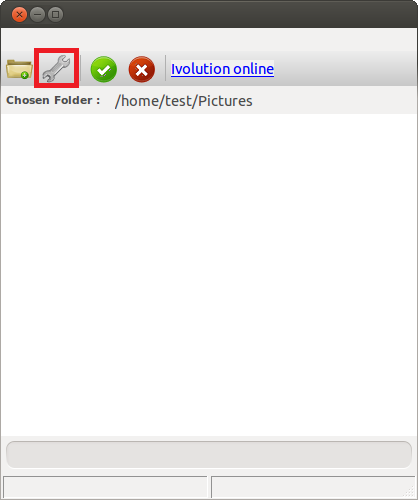
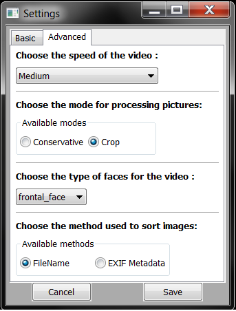

Settings
You can access the settings by clicking on the settings button in the main interface.
The settings Window is divided into two main parts :
- the basic settings, where you can change the name of the output file and its location
- the advanced settings, where you can change the behaviour of the algorithm itself
Basic Settings
This is the default page opened when you click on settings.

The basic settings page contains only elements:
- The output location chooser, where you can change where the timelapse will be saved
- The name chooser, where you can change the name of your timelapse.
Advanced Settings
The advanced settings page contain several option you can adjust to modify the timelapse creation algorithm behavior.

Speed of the video
With the speed option, you can select the framerate of the generated timelapse. The slower you choose, the more delay is added between each frame.
Basically, the accessible framerates with the speed option are 3, 6 and 9 frames per second.
Processing mode
The processing mode in Ivolution defines the type of video output you desire. There are two main processing types : conservative, and crop.
To understand the difference between those two types, you have to know the way Ivolution handles images. To create a nice timelapse, each image is resized so that the faces always keeps the same scale during the whole video. Each image is also moved so that the faces always stays in the same place, even if they are in a different part of the image.
You can easily understand this concept by looking at the difference between each mode in this video :
By choosing the conservative mode, all of your images are entirely used. This means that none of the images are cropped, and that black borders are added to keep the same dimension over all the video.
On the opposite, you can choose the crop mode if you don't want any black border in the video. In this case, the images are cropped to fill the maximum space available. This gives nicer results, as the video does not contain black borders, but keep in mind the the resolution of the video is also reduced in this case.
Face Type
The face type defines the type of video you want to have in output. Basically, there are two main different types : profile faces and front faces.
- Profile face mode expects your images to contain profile faces. Examples of use can be pregnant women that want to see their belly over time.
- Front face mode is the most common mode, perfect if you take front pictures of you. All of the examples you can see on this website use front configuration.
Sort method
The sort method defines the way images are sorted in the video. The default mode is filename, in which images will be sorted in name order. This mode is perfect for most images coming from cameras and webcams, as the file name contains the date at which the image was taken. Using this mode, you can also choose to sort the files in the order you want (by naming them yourselves numerically).
The other possible mode uses the EXIF metadata embedded in the picture. The EXIF metadata contain a special location for the creation date, and Ivolution can use it to sort pictures chronologically. Be careful though, because pictures may not contain metadata.
If you are not sure, simply leave the default option.